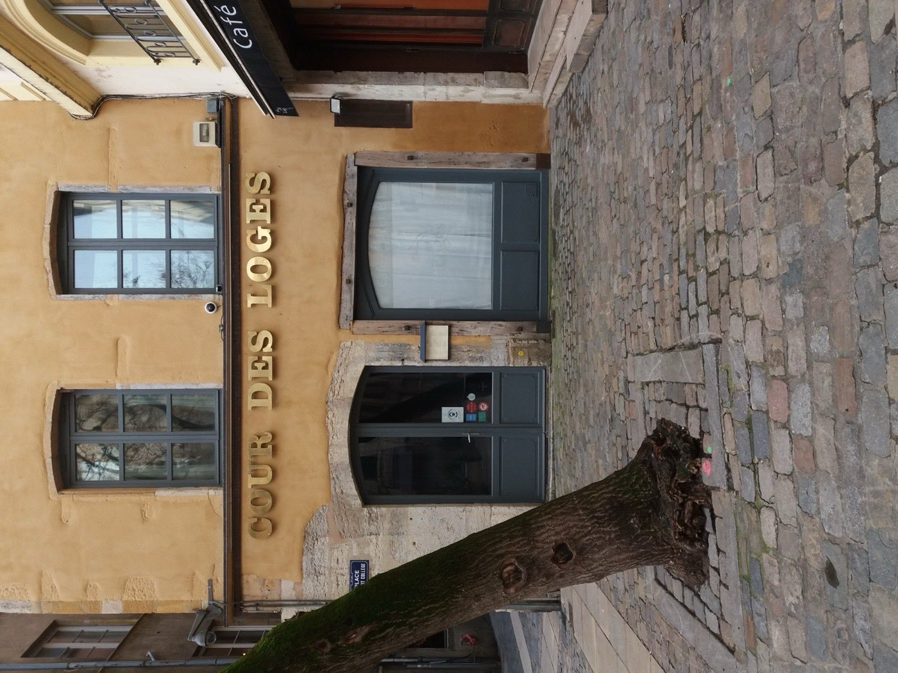
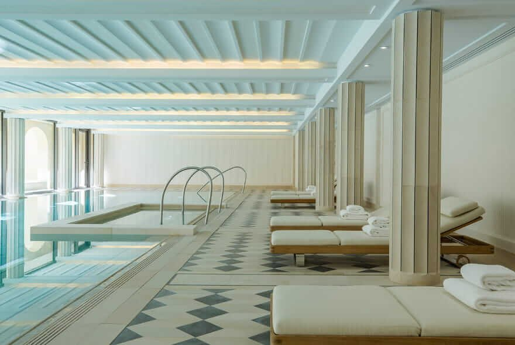
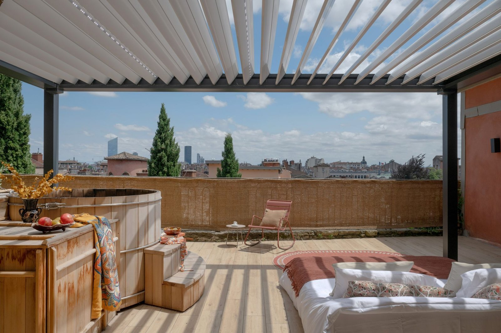
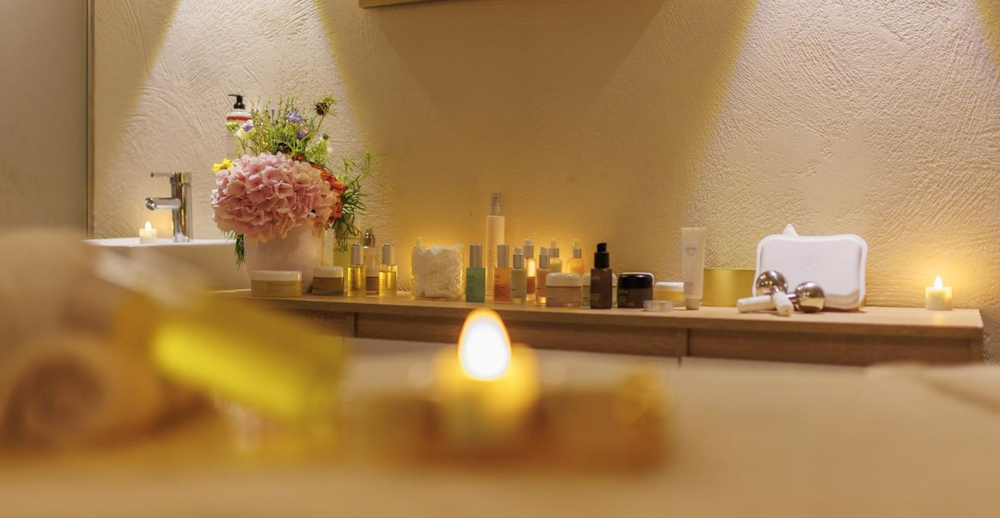

Lyon a un avantage que peu de villes françaises possèdent : une colline. Les
trois adresses les plus romantiques de la ville sont perchées dessus, à dix
minutes du Vieux-Lyon et à cent mètres au-dessus du bruit. Huit maisons
classées non pas sur leur qualité d'hôtel, mais sur ce qu'elles font
réellement pour un couple. La première coûte 203 € la nuit, la dernière 84 €.
Par Swann Bertaud, rédacteur hôtellerie de luxe✺Publié le 30 juillet 2026✺16 min de lecture
La terrasse de la Villa Florentine, sur la colline de Fourvière : la vue
qui vaut à cette maison le premier indice romantisme de Lyon.
Photo : Guilhem Vellut, Wikimedia Commons, CC BY 2.0.
TL;DR : l'essentielLe podium du romantisme lyonnais
Villa Florentine (Fourvière), indice romantisme 4,7/5 :
36 chambres sur la colline, une terrasse et une piscine qui surplombent le
Vieux-Lyon, un spa ouvert en juin 2026. Rouverte le 30 avril 2026 après
quatre mois de travaux, et dès 203 € la nuit en basse saison, ce qui en fait
aussi la meilleure affaire du haut de ce classement.
Cour des Loges (Vieux-Lyon), indice 4,5/5 :
quatre hôtels particuliers Renaissance, une cour coiffée d'une verrière de
17 mètres, un spa Pure Altitude et une table étoilée. Le décor le plus
cinématographique de la ville.
Villa Maïa (Fourvière), indice 4,4/5 :
la piscine de 20 mètres posée à l'emplacement exact de thermes romains, un
jardin de Louis Benech, et la plus belle vue de Lyon. C'est aussi la plus
chère, dès 450 €.
Le contre-pied : le Fourvière Hôtel, seul
4 étoiles du haut de tableau, arrive quatrième avec 4,2/5 devant deux
5 étoiles, pour un tarif d'entrée à 108 €. Un ancien couvent, un cloître, un
couloir de nage extérieur chauffé de 25 mètres et un bouchon intégré : le
romantisme n'est pas indexé sur le nombre d'étoiles, et cette page sert
précisément à le montrer.
L'indice romantisme LMHS, et ce qu'il ne mesure pas
Cette page croise deux notes qui ne mesurent pas la même chose. L'indice romantisme LMHS, noté sur 5, est celui qui classe cet article. C'est la même grille que celle de notre sélection romantique parisienne, appliquée telle quelle à Lyon, et il évalue cinq marqueurs concrets :
Intimité : le nombre de chambres. Moins il y en a, mieux c'est.
Éléments de décor : poutres apparentes, voûtes, cheminée, baignoire îlot.
Services couple : petit-déjeuner en chambre, terrasse privée, spa accessible à deux.
Calme : isolation réelle, absence de bruit de rue, position à l'écart.
Le score LMHS sur 10 est autre chose : c'est la note de la grille Destination, qui juge la qualité hôtelière globale, tous publics confondus. Quatre des huit adresses de cette page figurent déjà dans notre palmarès des meilleurs hôtels de Lyon, et nous reprenons leurs scores et leurs tarifs à l'identique : une même maison ne porte jamais deux notes différentes sur ce site.
Les quatre autres, Villa Maïa, MiHotel La Tour Rose, l'Hôtel de l'Abbaye et le Boscolo Lyon, entrent aujourd'hui au catalogue et n'ont pas de score Destination. Nous ne leur en inventons pas un pour les besoins de cette page : la grille lyonnaise pèse l'ancrage gastronomique à 25 %, et trois de ces quatre maisons n'ont pas de table lyonnaise intégrée. Elles seront notées quand elles passeront la grille complète, à la prochaine mise à jour du palmarès de Lyon. Leur indice romantisme, lui, est complet : il ne dépend d'aucun critère de restauration.
Le tableau : indice romantisme, chambres et prix
Rang
Hôtel
Quartier
Chambres
Indice romantisme
Score LMHS
Basse saison
Haute saison
01
Villa Florentine
Fourvière
36
4,7/5
9,3/10
203 €
359 à 502 €
02
Cour des Loges
Vieux-Lyon
61
4,5/5
9,0/10
210 €
227 à 364 €
03
Villa Maïa
Fourvière
34
4,4/5
non noté
450 €
n.c.
04
Fourvière Hôtel
Fourvière
75
4,2/5
8,2/10
108 €
229 à 310 €
05
MiHotel La Tour Rose
Vieux-Lyon
15
3,9/5
non noté
132 €
n.c.
06
Hôtel de l'Abbaye
Ainay
21
3,8/5
non noté
195 €
n.c.
07
Boscolo Lyon Hôtel & Spa
Presqu'île
133
3,7/5
non noté
325 €
n.c.
08
Collège Hôtel
Vieux-Lyon
40
3,5/5
7,0/10
84 €
159 à 230 €
Classement par indice romantisme. Prix chambre d'entrée de gamme par nuit,
taxes non incluses, basse saison de novembre à mars.
Les scores, les capacités et les fourchettes de prix de la Villa Florentine, de la Cour des
Loges, du Fourvière Hôtel et du Collège Hôtel sont repris de notre
palmarès des meilleurs hôtels de Lyon.
Les quatre autres adresses n'ont pas encore de score Destination : leur tarif d'entrée a été
relevé en juillet 2026, et nous n'avons pas de fourchette haute saison vérifiée à publier.
Notre sélection : les 8 hôtels les plus romantiques de Lyon
01
Villa Florentine, Fourvière indice 4,7/5
Pour qui : un anniversaire marquant, une demande en mariage, un week-end où l'on veut la vue et le spa sans quitter l'hôtel.
C'est l'adresse la plus romantique de Lyon, et l'écart avec la suivante tient à une chose : la position. Perchée sur la colline de Fourvière, dans un ancien couvent, la Villa Florentine a rouvert le 30 avril 2026 après quatre mois de travaux, une rénovation intégrale confiée à Joséphine Fossey. Ses 36 chambres et suites vont de 23 m² à 128 m² pour les suites terrasse. Ce qui compte pour un couple tient en trois éléments : la terrasse panoramique sur les toits du Vieux-Lyon, la piscine extérieure qui donne sur la même vue, et le spa ouvert en juin 2026, développé avec la marque Apoticari, avec hammam, sauna et cabines de soins. La maison a aussi refait sa table, La Table de la Villa Florentine, doublée d'un comptoir bistronomique et d'un bar caché. Membre Relais & Châteaux.
Le bémol LMHS : la rénovation est fraîche et le rodage n'est pas terminé, quelques avis post-réouverture signalent des finitions inégales. L'accès en voiture depuis le centre décourage ceux qui ne veulent pas conduire, et la montée à pied depuis le Vieux-Lyon se mérite. Le spa, ouvert depuis juin, n'a pas encore d'historique d'avis suffisant pour être jugé.
Fourvière, 5e arr. · 36 chambres · Spa Apoticari · Piscine extérieure et terrasse panoramique ·
Dès 203 €/nuit en basse saison · Score LMHS 9,3/10 ·
Fiche Relais & Châteaux →
02

Cour des Loges, Vieux-Lyon indice 4,5/5
Pour qui : les amateurs d'architecture, les gastronomes, un couple qui veut dormir dans un monument sans renoncer au spa.
Quatre hôtels particuliers Renaissance réunis rue du Bœuf, autour d'une cour intérieure coiffée d'une verrière de 17 mètres : la Cour des Loges est le décor le plus théâtral de Lyon, et les traboules commencent littéralement dans le hall. Rouverte en mai 2025 après plus de deux ans de travaux, elle est devenue la première adresse française de la Radisson Collection. Ses 61 chambres et suites sont toutes différentes, entre poutres apparentes et voûtes en pierre. Côté table, Les Loges, dirigé par le chef Anthony Bonnet, a retrouvé son étoile au Guide Michelin 2026, dix mois après la réouverture ; Le Comptoir et le Bar 1341 complètent l'offre. Le spa Pure Altitude, inspiré des thermes romains, ajoute piscine intérieure, sauna, hammam et cabine de soins double, ce qui manquait à la maison d'avant.
Le bémol LMHS : le rapport qualité-prix reste le point faible signalé par les clients. Le parking est un calvaire dans ce quartier pavé, comptez 49 €/nuit de voiturier, et l'arrivée en valises à roulettes sur les pavés du Vieux-Lyon est un exercice. Avec 61 chambres, l'intimité n'est pas celle d'une maison de vingt clés.
Rue du Bœuf, 5e arr. · 61 chambres · Spa Pure Altitude · Table étoilée Michelin 2026 ·
Dès 210 €/nuit en basse saison · Score LMHS 9,0/10 ·
Site officiel →
03

Villa Maïa, Fourvière indice 4,4/5
Pour qui : les couples qui viennent pour le spa et le silence, et que le design épuré séduit plus que les poutres apparentes.
À trois cents mètres de la Villa Florentine, sur la même colline, la Villa Maïa joue une partition inverse : pas de patrimoine réhabilité, mais une maison contemporaine dessinée par Jean-Michel Wilmotte, décorée par Jacques Grange, entourée d'un jardin de Louis Benech conçu sans allées ni bancs, uniquement pour être regardé. Vingt-sept chambres, six suites et un appartement de 100 m², la plupart avec une vue qui porte sur la Presqu'île, les fleuves et, par temps clair, le Mont-Blanc. Le morceau de bravoure est en sous-sol : Les Thermes, une piscine couverte de 20 mètres posée à l'emplacement exact de thermes romains mis au jour pendant les fouilles, avec jacuzzi, sauna, hammam et salle de fitness. Peu d'hôtels en France peuvent dire que leur bassin occupe la place d'un bassin antique.
Le bémol LMHS : le prix, d'abord, avec un tarif d'entrée à 450 € qui en fait l'adresse la plus chère de cette page. Et l'absence de restaurant : la maison compte un bar et une bibliothèque, mais pour dîner il faut traverser la rue, chez Christian Têtedoie. Pour un dîner en tête-à-tête sans sortir, ce n'est pas ici. L'établissement n'a pas encore de score LMHS Destination.
Montée Saint-Barthélemy, 5e arr. · 27 chambres, 6 suites et 1 appartement · Piscine de 20 m et thermes · Jardin de Louis Benech ·
Dès 450 €/nuit · Score LMHS non attribué ·
Site officiel →
04
Fourvière Hôtel, Fourvière indice 4,2/5
Pour qui : le meilleur rapport romantisme-prix de Lyon, pour un couple qui veut un spa, un cloître et un vrai bouchon sans dépenser 300 €.
Un ancien couvent de la Visitation Sainte-Marie transformé en 4 étoiles, avec un cloître devenu jardin et une chapelle devenue hall d'accueil. Les 75 chambres portent des portes décorées de motifs historiques. Ce qui fait basculer cette adresse devant deux 5 étoiles de ce classement : le spa Fourvière Les Bains, et son couloir de nage extérieur chauffé de 25 mètres, doublé d'un hammam et d'un jacuzzi, plus deux tables qui ne se marchent pas dessus. Le Bouchon sert la cuisine lyonnaise dans un décor entièrement chiné, tablier de sapeur, quenelles, saucisson brioché ; Les Téléphones, bistronomique, donne sur le cloître. Dès 108 € la nuit en basse saison, c'est le tarif d'entrée le plus bas de cette page après le Collège Hôtel.
Le bémol LMHS : le service à la réception est régulièrement décrit comme jeune ou inexpérimenté, surtout l'été. Pas de salle de sport, ce qui se critique pour un 4 étoiles. Le bar et le brunch sont jugés chers au regard de la prestation. Et avec 75 chambres, c'est le deuxième établissement le moins intime de la sélection.
23 rue Roger Radisson, 5e arr. · 75 chambres · Couloir de nage extérieur chauffé de 25 m · Bouchon intégré ·
Dès 108 €/nuit en basse saison · Score LMHS 8,2/10 ·
Site officiel →
05

MiHotel La Tour Rose, Vieux-Lyon indice 3,9/5
Pour qui : un couple qui veut une baignoire près du lit, une terrasse à soi, et surtout ne croiser personne.
La Tour Rose est l'un des bâtiments les plus photographiés du Vieux-Lyon, avec sa façade rose et sa tour d'escalier ronde. MiHotel y exploite 15 suites, toutes différentes, du junior à l'ultra-luxe, et dix d'entre elles disposent d'une baignoire, certaines posée dans la pièce à vivre, d'autres en extérieur avec bain nordique sur terrasse. Chaque suite a sa kitchenette. Le parti pris est radical : il n'y a pas de réception, l'enregistrement se fait en ligne et les codes d'accès arrivent par courriel, si bien qu'on peut passer un week-end entier sans parler à personne. Pour un couple qui vient s'enfermer, c'est exactement l'argument.
Le bémol LMHS : l'absence de réception est aussi une absence de service. Pas de spa, pas de petit-déjeuner servi, personne à qui demander une table le soir. Le food court installé au pied de la tour en 2020 a fermé en août 2024, la programmation du rez-de-chaussée reste en transition : ne comptez pas dessus pour dîner. La rue Saint-Jean est très fréquentée en journée. L'établissement n'a pas encore de score LMHS Destination.
Rue du Bœuf, 5e arr. · 15 suites · Baignoire dans 10 suites, bains nordiques sur terrasse · Accès autonome, sans réception ·
Dès 132 €/nuit · Score LMHS non attribué ·
Site officiel →
06
Hôtel de l'Abbaye, Ainay indice 3,8/5
Pour qui : un premier week-end à deux à Lyon, dans un quartier calme et central, avec une table sérieuse au rez-de-chaussée.
L'ancien presbytère de la basilique Saint-Martin d'Ainay, en face de laquelle il se tient toujours, est devenu un boutique-hôtel de 21 chambres et suites réaménagé par les designers lyonnais de Maison Hand : pièces chinées, classiques du design, teintes sourdes, hauteurs sous plafond de presbytère. Ainay est le quartier le plus discret de la Presqu'île, à mi-chemin entre Bellecour et Perrache, et c'est ce qui fait la valeur romantique de l'adresse : on y dort dans le centre sans en entendre le bruit. Au rez-de-chaussée, L'Artichaut, bistronomique de 45 couverts ouvert du mardi au samedi et le dimanche midi, complété par le Café de l'Abbaye où le quartier vient prendre un verre.
Le bémol LMHS : pas de spa, pas de piscine, aucun service pensé pour un couple au-delà du décor et de la table. Vingt et une chambres dans un presbytère, cela veut dire des surfaces contraintes et des configurations très inégales d'une clé à l'autre. L'établissement n'a pas encore de score LMHS Destination.
20 rue de l'Abbaye d'Ainay, 2e arr. · 21 chambres et suites · Restaurant L'Artichaut · Décor Maison Hand ·
Dès 195 €/nuit · Score LMHS non attribué ·
Site officiel →
07

Boscolo Lyon Hôtel & Spa, Presqu'île indice 3,7/5
Pour qui : une journée entière au spa à deux, en plein centre, sans avoir à monter sur la colline.
Installé dans un immeuble du XIXe siècle qui fut l'un des tout premiers hôtels de la ville, le Boscolo joue une élégance italienne assumée : marbre clair, velours, lignes nettes. La maison revendique un passé de clientèle illustre, Martin Luther King et Édith Piaf y ont dormi. L'argument de cette page tient en un chiffre : 450 m² de spa inspiré des thermes romains, avec piscine ouverte de 7 h à 21 h, espace fitness accessible en permanence et cabines de soins. C'est la plus grande surface de bien-être de cette sélection, et la seule en Presqu'île. La table, Angelo, est confiée au chef Antonio Salvati, cuisine italienne, prolongée par un bar à cocktails.
Le bémol LMHS : 133 chambres, c'est quatre fois la Villa Maïa et neuf fois la Tour Rose. On y croise du monde, des groupes et des séminaires, ce qui casse net l'effet bulle. Le tarif d'entrée relevé à 325 € place la maison au-dessus de la Cour des Loges et de la Villa Florentine, pour un décor plus démonstratif que romantique. L'établissement n'a pas encore de score LMHS Destination.
Presqu'île, 2e arr. · 133 chambres dont 17 suites · Spa de 450 m² avec piscine · Restaurant Angelo ·
Dès 325 €/nuit · Score LMHS non attribué ·
Site officiel →
08
Collège Hôtel, Vieux-Lyon indice 3,5/5
Pour qui : un week-end à deux avec un budget serré, et l'envie d'une adresse qui ne se prend pas au sérieux.
Place Saint-Paul, une façade Art déco de 1930 redessinée par le sculpteur Pablo Reinoso, dont les 130 fenêtres s'illuminent la nuit. À l'intérieur, tout est blanc et tout est scolaire : pupitres, tableaux noirs, photos de classe. Les 40 chambres sont organisées en cycles, le troisième donnant sur des balcons panoramiques. La terrasse de 250 m² sur le toit, avec vue sur Fourvière et la Saône, est le vrai argument à deux, tout comme le tarif : dès 84 € la nuit en basse saison, c'est l'adresse la moins chère de la sélection, en plein Vieux-Lyon.
Le bémol LMHS : rien n'a été conçu ici pour un couple. Le décor scolaire est clivant, une partie des clients trouve les photos de classe lugubres. Les chambres sont petites, le mobilier critiqué, il n'y a ni spa ni restaurant. Excellent rapport prix-emplacement, dernier du classement romantisme, et c'est cohérent.
5 place Saint-Paul, 5e arr. · 40 chambres · Terrasse panoramique de 250 m² · Façade signée Pablo Reinoso ·
Dès 84 €/nuit en basse saison · Score LMHS 7,0/10 ·
Site officiel →
Le mot de SwannÀ Lyon, le romantisme se joue sur cent mètres de dénivelé
Villa Florentine ou Cour des Loges, c'est la question que tout le monde pose. Ma réponse tient à la topographie. La Cour des Loges est un monument magnifique, mais elle est dans le Vieux-Lyon : les pavés, les groupes, les valises, le voiturier à 49 €. La Villa Florentine est au-dessus. Cent mètres de dénivelé, et le bruit s'arrête. Vous regardez la ville au lieu d'être dedans, la piscine et la terrasse donnent sur ce que les autres viennent photographier, et le spa a ouvert en juin. À 203 € en basse saison, elle est aussi moins chère que la Villa Maïa, plus chère de 250 €, et que le Boscolo. C'est le meilleur rapport romantisme-prix du haut de gamme lyonnais, et de loin. Si le budget descend sous les 150 €, le raisonnement ne change pas : restez sur la colline, prenez le Fourvière Hôtel, son couloir de nage chauffé et son bouchon, à 108 €. Lyon est une ville où la bonne décision romantique consiste à monter.
Swann Bertaud, rédacteur hôtellerie de luxe
Par profil : quel hôtel selon ce que vous cherchez
Budget serré, moins de 200 € la nuit
Le Collège Hôtel ouvre le bal à 84 € en basse saison, avec sa terrasse panoramique de 250 m² et un emplacement en plein Vieux-Lyon. Le Fourvière Hôtel, à 108 €, est notre recommandation nette dans cette tranche : c'est le seul hôtel sous 150 € de cette page à offrir un vrai spa avec couloir de nage chauffé, un cloître et un bouchon intégré. MiHotel La Tour Rose, à 132 €, vaut pour ses baignoires et son autonomie totale.
Spa et bien-être à deux
Trois maisons se détachent, et elles ne proposent pas la même chose. La Villa Maïa a la plus belle installation, une piscine couverte de 20 mètres à l'emplacement de thermes romains. Le Boscolo Lyon a la plus grande surface, 450 m² en Presqu'île. Le Fourvière Hôtel a la plus originale, un couloir de nage extérieur chauffé de 25 mètres, et de loin la moins chère. La Cour des Loges complète la liste depuis sa réouverture, avec un spa Pure Altitude.
Vue panoramique
Toute la colline de Fourvière, sans surprise. La Villa Florentine pour la vue frontale sur les toits du Vieux-Lyon depuis sa terrasse et sa piscine, la Villa Maïa pour le panorama le plus large, jusqu'au Mont-Blanc par temps clair. En bas, le Collège Hôtel offre le meilleur rapport vue-prix de la ville avec sa terrasse de toit à 84 € la nuit.
Dîner en tête-à-tête sans sortir de l'hôtel
La Cour des Loges d'abord, pour Les Loges et son étoile Michelin 2026 sous la verrière de la cour. La Villa Florentine ensuite, avec sa table gastronomique et son comptoir bistronomique. Le Fourvière Hôtel pour un dîner lyonnais authentique au Bouchon, et l'Hôtel de l'Abbaye pour L'Artichaut, la meilleure table de cette page en dessous de 200 € la nuit. À éviter si c'est votre critère : la Villa Maïa, qui n'a pas de restaurant, et le Collège Hôtel, qui n'en a pas non plus.
Intimité maximale
MiHotel La Tour Rose et ses 15 suites sans réception, pour ne croiser personne de tout le week-end. L'Hôtel de l'Abbaye et ses 21 chambres dans un ancien presbytère, pour la même chose avec du service. À l'opposé, le Boscolo et ses 133 chambres est le moins intime de la sélection, et c'est ce qui lui coûte sa place au classement malgré son spa.
FAQ : hôtel romantique à Lyon
Quel est le meilleur hôtel romantique à Lyon ?
La Villa Florentine, sur la colline de Fourvière, avec un indice romantisme LMHS de 4,7/5 et un score hôtelier de 9,3/10. Elle cumule la terrasse panoramique sur les toits du Vieux-Lyon, une piscine extérieure avec la même vue, un spa ouvert en juin 2026 et le calme de la colline, pour un tarif d'entrée à 203 € en basse saison. La Cour des Loges (4,5/5) est l'alternative pour qui préfère le décor Renaissance et une table étoilée.
Quel hôtel romantique à Lyon avec spa ?
Quatre adresses de cette sélection ont un vrai espace bien-être. La Villa Maïa propose une piscine couverte de 20 mètres installée à l'emplacement de thermes romains, avec sauna, hammam et jacuzzi, dès 450 €. Le Boscolo Lyon aligne 450 m² de spa en Presqu'île, dès 325 €. Le Fourvière Hôtel offre un couloir de nage extérieur chauffé de 25 mètres dès 108 €, le meilleur rapport spa-prix de la ville. La Cour des Loges dispose d'un spa Pure Altitude avec piscine intérieure.
Quel hôtel romantique à Lyon pour moins de 200 € ?
Trois adresses. Le Collège Hôtel à 84 € en basse saison, avec sa terrasse de toit de 250 m² sur Fourvière et la Saône. Le Fourvière Hôtel à 108 €, notre premier choix dans cette tranche : ancien couvent, cloître, spa avec couloir de nage chauffé et bouchon intégré. MiHotel La Tour Rose à 132 €, pour une suite avec baignoire dans le Vieux-Lyon. L'Hôtel de l'Abbaye ferme la marche à 195 €.
Villa Florentine ou Cour des Loges ?
La Villa Florentine si vous voulez le calme, la vue et le spa : elle est sur la colline, au-dessus du bruit du Vieux-Lyon, avec terrasse et piscine panoramiques, et son tarif d'entrée est inférieur de 7 € à celui de la Cour des Loges. La Cour des Loges si vous venez pour le décor et pour la table : quatre hôtels particuliers Renaissance, une cour sous verrière de 17 mètres, et le restaurant Les Loges, étoilé au Guide Michelin 2026. Son point faible reconnu reste le rapport qualité-prix et un stationnement compliqué.
Quand réserver pour un week-end en amoureux à Lyon ?
La basse saison lyonnaise court de novembre à mars, hors Fête des Lumières début décembre, où la ville affiche complet et où les tarifs doublent. C'est la période où les écarts sont les plus spectaculaires : la Villa Florentine passe de 203 € à une fourchette de 359 à 502 € en haute saison, le Collège Hôtel de 84 € à 230 €. Réservez en semaine plutôt qu'un samedi, et vérifiez le calendrier des salons d'Eurexpo, qui tendent tout le marché hôtelier lyonnais sur quelques jours.
Qu'est-ce que l'indice romantisme LMHS ?
C'est une note sur 5 calculée sur cinq marqueurs concrets : l'intimité (nombre de chambres), les éléments de décor romantiques (poutres, voûtes, cheminée, baignoire îlot), les services couple (petit-déjeuner en chambre, terrasse privée, spa accessible à deux), le calme réel et la présence d'une vue ou d'une cour intérieure. Il ne suit pas le score hôtelier : le Fourvière Hôtel, 4 étoiles noté 8,2/10, devance ici deux 5 étoiles mieux notés sur la grille Destination. La même grille est appliquée à notre sélection romantique parisienne.
Méthode et sources
8 adresses lyonnaises retenues parmi les hôtels de charme et les 5 étoiles de la ville, classées par indice romantisme LMHS et non par score hôtelier. L'indice, noté sur 5, repose sur cinq marqueurs vérifiables : intimité (nombre de chambres), éléments de décor romantiques, services couple effectivement proposés, calme réel, vue ou cour intérieure. Le score LMHS sur 10 est celui de la grille Destination : rapport qualité-prix (25 %), ancrage gastronomique (25 %), localisation (20 %), service (20 %), avis clients vérifiés (10 %). Les scores, capacités et fourchettes de prix de la Villa Florentine, de la Cour des Loges, du Fourvière Hôtel et du Collège Hôtel sont repris à l'identique de notre palmarès des meilleurs hôtels de Lyon, afin qu'une même maison ne porte jamais deux notes différentes sur ce site. Villa Maïa, MiHotel La Tour Rose, Hôtel de l'Abbaye et Boscolo Lyon n'ont pas encore passé la grille Destination et sont publiés sans score, avec le seul tarif d'entrée relevé. Aucune de ces huit maisons n'a fait l'objet d'un séjour de contrôle pour cette page : les faits ont été vérifiés sur les sites officiels des établissements et recoupés sur le Guide Michelin, l'office de tourisme de Lyon et la presse hôtelière en juillet 2026. Capacités, spas et tables vérifiés le 30 juillet 2026. Aucun partenariat commercial, aucune affiliation. Tarifs relevés en juillet 2026, chambre d'entrée de gamme, taxes non incluses. Photographies : sites officiels (Villa Maïa, MiHotel La Tour Rose, Hôtel de l'Abbaye, Boscolo Lyon) et Wikimedia Commons (Villa Florentine : Guilhem Vellut, CC BY 2.0 ; Cour des Loges et Fourvière Hôtel : CC0).
8 adressesIndice romantisme propriétaire4 sous 200 €0 partenariat